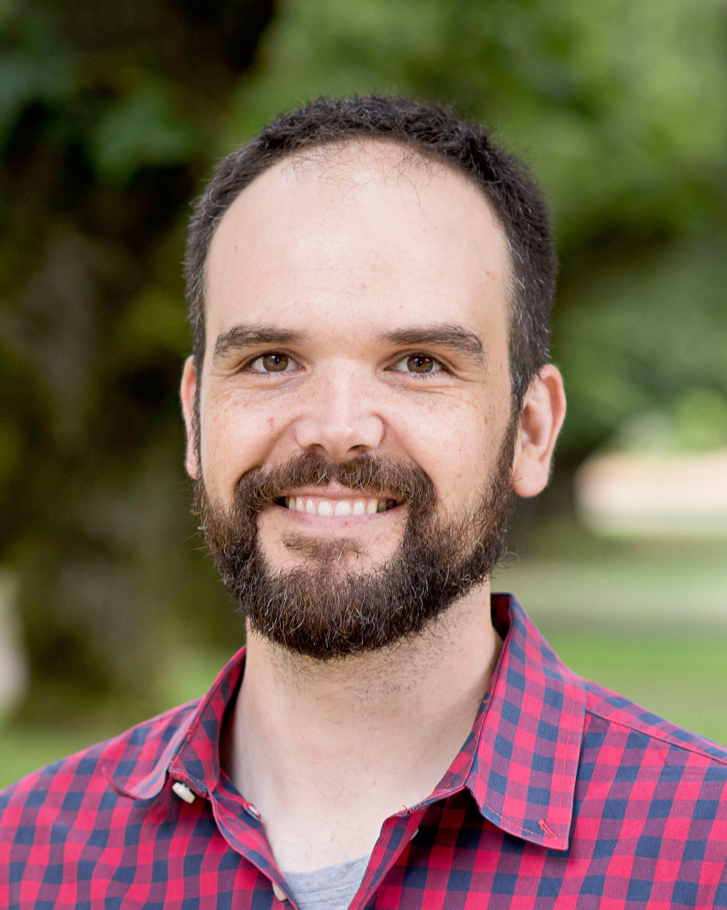

## People
<table style="width:100%">
  <tr>
    <td></td>
    <td>
      <h4>Darren Cusanovich</h4>
      <p><font size=12>Assistant Professor in Cellular and Molecular Medicine and Assistant Research Scientist in the Asthma & Airway Disease Research Center</br>
      Darren received his B.S. in Music Busines (yes, Music Business!) from Loyola University New Orleans in 2002. After a brief stint in the music industry in Los Angeles, he realized that his true passion was genomics (it's a long story). To pursue that dream, Darren first spent a few years in the Vercelli Lab here at UofA, where he was first exposed to asthma genomics research. Darren subsequently received his Ph.D. in Human Genetics from The University of Chicago (in Yoav Gilad's lab). During his graduate training, Darren studied how genetic variation in human populations can perturb gene regulatory networks and ultimately lead to complex disease susceptibilities. Darren then went on to pursue his postdoctoral studies in Jay Shendure's lab at the University of Washington. There he worked to develop a novel single-cell chromatin accessibility assay and applied it to several model systems to learn about all of the variation in gene regulatory landscapes present in complex tissues.</br>
      In 2018, Darren accepted a position here at the University of Arizona in Cellular and Molecular Medicine and the Asthma & Airway Disease Research Center.</br>
      E-mail: darrenc@email.arizona.edu</br>
      <a href="assets/CV.pdf">CV</a></br>
      <a href="https://www.ncbi.nlm.nih.gov/pubmed/?term=Cusanovich%20DA%5BAuthor%5D&cauthor=true&cauthor_uid=29539636">Pubmed</a></font></p>
    </td> 
  </tr>
  <tr>
    <td>?</td>
    <td>
      <h4>You?</h4>
      <p>Looking for an exciting opportunity? Do you like the idea of pursuing cutting-edge genomics research? Do you like the idea of living in a place with lots of sunshine, lots of opportunity for outdoor activities, vibrant southwestern culture, easy commutes, and an affordable cost living? E-mail us! We are always looking for talented, enthusiastic people to work with.</p>
    </td>
  </tr>
</table>
